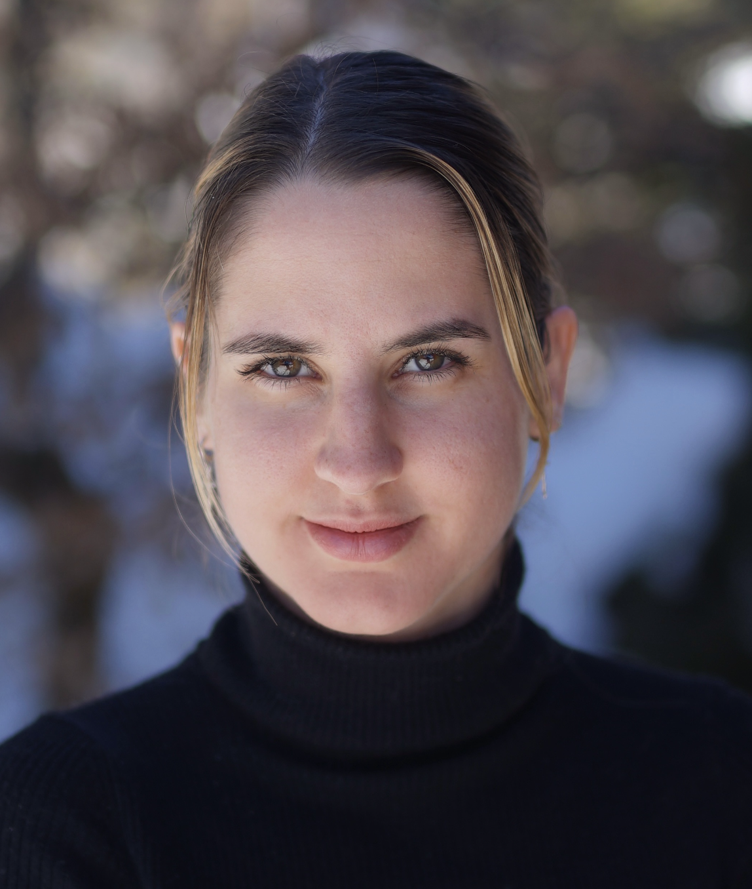

Maria Miklos
A propos de moi
Bonjour à tous! Merci d'avoir pris le temps de visiter mon site personnel.
Je suis Maria Miklos, étudiante en Bachelor de Mathématiques à l'Université de Neuchâtel. Je suis un cours de Technologies Web & Réseaux afin de développer mon background informatique.
Je suis passionnée par la programmation et c'est pourquoi je fais un mineur d'informatique.
Mon calendrier académique
| Semestre | Horaire | Lundi | Mardi | Mercredi |
|---|---|---|---|---|
| Printemps | 08:15 - 10:00 | Mesures & Intégration | Mesures & Intégration (TP) | Géométrie Différentielle |
| 10:15 - 12:00 | Géométrie Différentielle | Mesures & Intégration | Géométrie Différentielle (TP) | |
| 14:15 - 16:00 | Mesures & Intégration (TP) | Technolongies Web & Réseaux | Géométrie Différentielle | |
| 16:15 - 18:00 | Géométrie Différentielle (TP) | Technolongies Web & Réseaux (TP) |